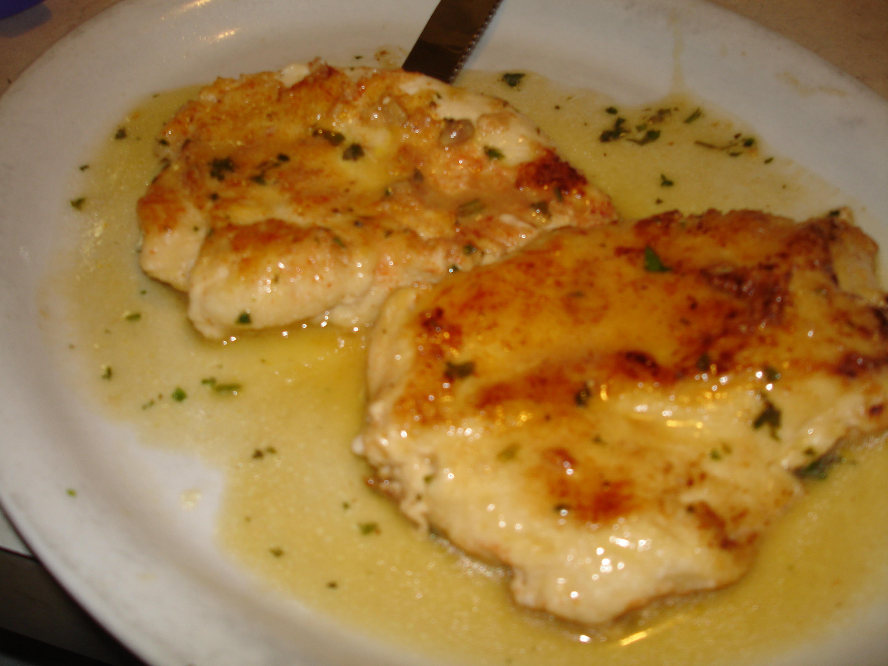

Chicken Francese

Description
Chicken Francese, also known as, Chicken Française, Chicken Francois, and Chicken French, is a delicious Italian-American dish made with sauteed chicken cutlets with a lemon sauce.
Ingredients
- 1/2 cup all-purpose flour
- 4 large eggs, beaten
- 1 pound skinless and boneless chicken breast halves
- 2 tablespoons olive oil
- 2 cups chicken broth
- 1/2 cup white wine
- 1/4 cup butter
- 2 medium lemons, juiced
- 1 teaspoon of chopped, fresh parsley
- 2 teaspoons water
- 1 teaspoon cornstarch
- Salt and Black Pepper to taste
Steps
- Dredge the chicken in flour. Dip it into the beaten egg. Lift in a way that the excess drips back into the bowl. Press into the flour to coat both sides. Repeat with the rest of the chicken.
- Heat oil in a nonstick pan over medium heat. Add the chicken and sauté until almost cooked through or about four minutes per side. Transfer to a plate lined with paper towel.
- Preheat the oven to 300°F and grease a 9"x13" baking dish.
- Heat the chicken broth, wine, butter, lemon juice, parsley, salt, and pepper in a medium saucepan over medium-low heat while stirring occassionally until the butter melts. Stir water and cornstarch together in a bowl and, then, add to the broth mixture. Cook until it thickens slightly or about two to three minutes.
- Add the chicken to the greased baking dish and pour the sauce over top
- Bake in the oven until chicken is no longer pink in the center or about ten to fifteen minutes. The chicken should be at least 165°F when a thermometer is inserted into the center.
- Plate and enjoy!